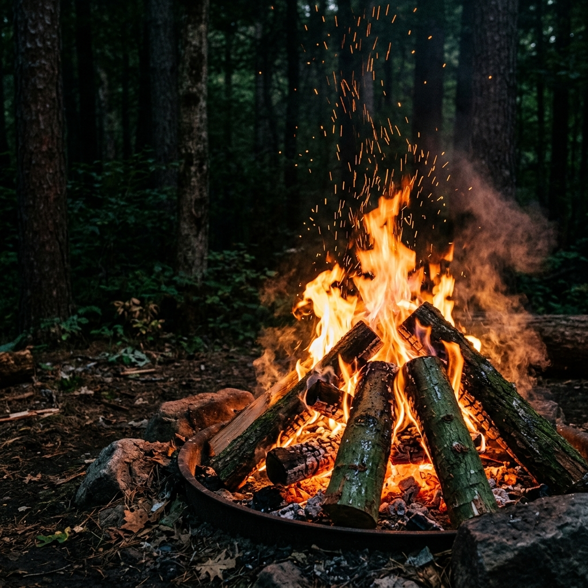

Si mundet një dru i gjelbër plot me ujë të ruajë energjinë që më pas kthehet në zjarr? Kurani thekson këtë proces mahnitës, duke paralajmëruar kuptimin modern të ruajtjes së energjisë.
Thelb: Kurani tërheq vëmendjen mbi një fakt paradoksal: zjarri i nxehtë dhe i thatë nxirret nga pema e gjelbër dhe plot ujë. Në kimi, kjo është e njohur si depozitimi i energjisë diellore nga pema e gjelbër përmes fotosintezës, e cila më pas çlirohet si nxehtësi dhe dritë (zjarr) kur druri digjet.

Kthimi i Energjisë Diellore
Ligji i Ruajtjes së Energjisë na mëson se energjia as nuk krijohet nga hiçi, as nuk asgjësohet, por vetëm kthehet nga një formë në një tjetër. Kur pema është e gjelbër dhe e gjallë, ajo kap energjinë e diellit me anë të klorofilit dhe e përdor atë për të thyer ujin (H2O) dhe dioksidin e karbonit (CO2) për të ndërtuar lëndën drusore (celulozën).
Ky dru nuk është gjë tjetër veçse "bateri natyrore" ku është magazinuar energjia diellore. Kur ne ndezim një zjarr, po ndodh procesi i kundërt i fotosintezës: oksigjeni thithet, dhe energjia e magazinuar në dru çlirohet sërish si nxehtësi dhe dritë. Pa atë magazinim të hershëm gjatë kohës që druri ishte "i gjelbër", druri i thatë nuk do të lëshonte asnjë lloj nxehtësie.
Paradoksi që Përmban të Vërtetën
Askush nuk e kuptonte këtë proces kimik thellësor në të kaluarën. Fakti që theksi vihet te "druri i gjelbër" si burimi i zjarrit thekson momentin aktiv të mbajtjes së atij zjarri të ardhshëm. Edhe popujt e lashtë arabë përdornin disa lloje drurësh specifikë, si druri "Markh" dhe "Afar", të cilët edhe pse të gjelbër kur fërkoheshin lëshonin shkëndija për shkak të vajrave të tyre. Në të dyja nivelet e kuptimit, zbulimi është shkencërisht preçiz.
Ajetet Kuranore
Kuran 36:80
الَّذِي جَعَلَ لَكُم مِّنَ الشَّجَرِ الْأَخْضَرِ نَارًا فَإِذَا أَنتُم مِّنْهُ تُوقِدُونَ
Ai që prej drurit të gjelbër ju bëri zjarrin, me të cilin ju ndizni.